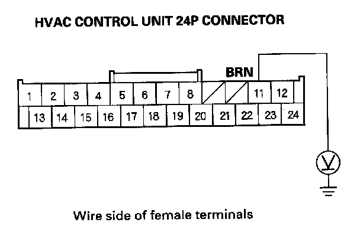
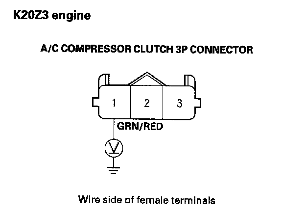
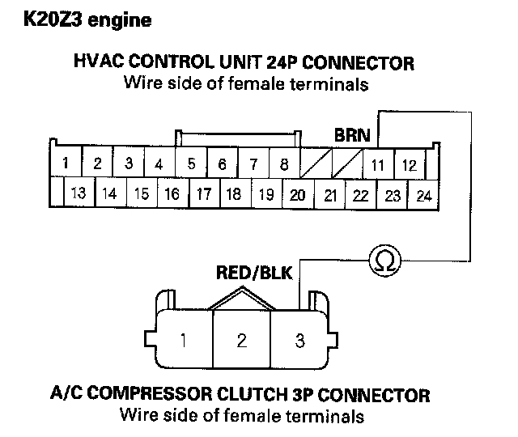
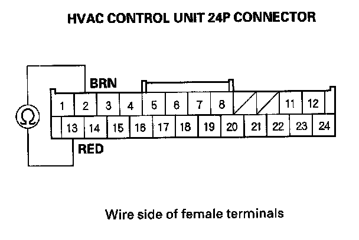

A/C Signal Circuit Troubleshooting
A/C Signal Circuit TroubleshootingNOTE:
- Do not use this troubleshooting procedure if any of the following items are operative; A/C condenser fan, radiator fan, A/C compressor. Refer to the symptom troubleshooting index.
- Before performing symptom troubleshooting, check for powertrain DTCs, R18A1 engine, K20Z3 engine.
1. Turn the ignition switch OFF.
2. Disconnect the HVAC control unit 24P connector.
3. Turn the ignition switch ON (II).

4. Measure the voltage between the HVAC control unit 24P connector terminal No. 11 and body ground.
Is there voltage?
YES - Go to step 11.
NO - Go to step 5.
5. Turn the ignition switch OFF.
6. Disconnect the A/C compressor clutch 3P connector.
7. Turn the ignition switch ON (II).

8. K20Z3 engine: Measure the voltage between the A/C compressor clutch 3P connector terminal No.1 and body ground.
Is there battery voltage?
YES - Go to step 9.
NO - Repair open in the wire between the A/C compressor and the MICU. If the wire is OK, substitute a known-good MICU and recheck. If the symptom goes away, replace the original MICU.
9. Test the A/C compressor thermal protector.
Is the A/C compressor thermal protector OK?
YES - Go to step 10.
NO - Replace the A/C compressor thermal protector.

10. K20Z3 engine: Check for continuity between the HVAC control unit 24P connector terminal No. 11 and the A/C compressor clutch 3P connector terminal No. 3.
Is there continuity?
YES - Check for loose wires or poor connections at the HVAC control unit 24P connector and at the A/C compressor clutch 3P connector.
NO - Repair open in the wire between the HVAC control unit and A/C compressor.
11. Turn the ignition switch OFF.

12. Measure the evaporator temperature sensor resistance between the HVAC control unit 24P connector terminals No.2 and No. 13.
Is resistance less than 24 kohms?
YES - Go to step 13.
NO - Test the evaporator temperature sensor.
13. Reconnect the HVAC control unit 24P connector.
14. Turn the ignition switch ON (II).
15. Check if the blower motor operates at all speeds.
Does the blower motor operates at all speeds?
YES - Check for loose wires or poor connections at the HVAC control unit 24P connector. If the connections are good, substitute a known-good HVAC control unit and recheck. If the symptom goes away, replace the original HVAC control unit.
NO - Repair the problem in the blower motor circuit.